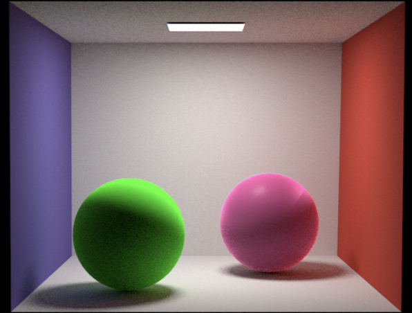
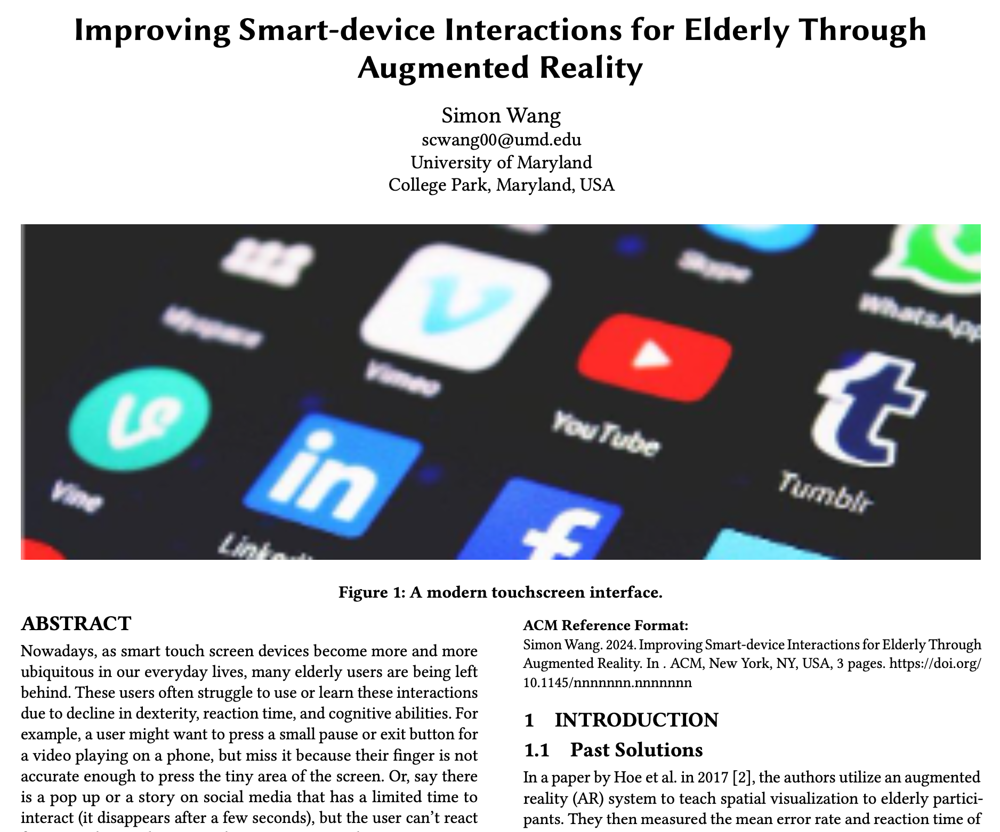

I'm a Computer Science Master's Student at the University of Maryland (UMD). I love applying what I study to create impactful tools that show the amazing potential of technology to engage and assist everyone! Check out the links below and look through this site to find out more. Thanks :)
Course research project for CMSC848K - Multimodal Foundation Models. Developed a multi-modal multi-agent system and investigated how to improve multimodal large language model (MLLM) benchmarking.
Monte Carlo Rendering and Disney BRDF in PyTorch
December 14, 2024

Two spheres with Disney style shading!
An implementation of Monte Carlo path tracing and Disney "principled" BRDF in PyTorch. An extension of an assignment codebase from CMSC740 - Advanced Graphics course. Implemented advanced computer graphics concepts such as Monte Carlo integration, neural radiosity, and multiple importance sampling. As a final project, I also implemented the Disney shading system in the existing renderer with fine-grained control of object appearance using 10 parameters.
AI Art Advisor
July, 2024
To illustrate a potential application of AI models to benefit artists, I created a prototype "AI art advisor" using the latest vison-language model GPT-4o ("omni") from OpenAI. This new GPT model now has vision capabilities, so, I was inspired to ask the question: how well can it understand art?
I created a simple user interface where the user can upload any image (png or jpg format) of their art, along with their API key and any specific requests. In the backend, these inputs are parsed into several API calls to GPT-4o. In the API call, the system is told its role as an art advisor that gives constructive feedback (both negative and positive). Finally, the response is returned and formatted into clean markdown format before being printed out in the Gradio app interface.
Virtual Classroom
May 17, 2024
A scene from our VR vector math lecture
This is a virtual reality (VR) project created in the Unity game engine throughout the Spring 2024 semester for the course CMSC838C: Advances in XR.
I led a group of 5 classmates to design a virtual classroom environment, and we conducted a user study to investigate the benefits of XR education
over traditional remote learning mediums such as video.
Improving Control and Consistency of Diffusion-Generated Video
May 2, 2024
Selected frames from a video I generated
Semester-long course project created for CMSC720: Foundations of Deep Learning. Investigated state of the art diffusion-based video generation
methods, and experimented with various approaches to improving their quality in terms of consistency and controllability. Wrote and submitted
a NEURIPS format paper for a mock-conference within our class.
Augmented Reality for Enhancing Elderly Interaction with Touch Screens (Idea)
May, 2024

Hypothetical research project for CMSC839A: Embodied Media Design.